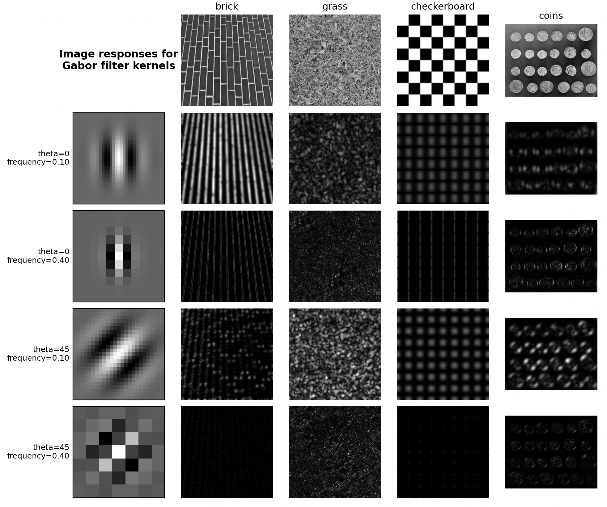

import matplotlib.pyplot as plt
import numpy as np
from scipy import ndimage as ndi
from skimage import data
from skimage.filters import gabor_kernel
def compute_feats(image, kernels):
feats = np.zeros((len(kernels), 2), dtype=np.double)
for k, kernel in enumerate(kernels):
filtered = ndi.convolve(image, kernel, mode='wrap')
feats[k, 0] = filtered.mean()
feats[k, 1] = filtered.var()
return feats
def match(feats, ref_feats):
min_error = np.inf
min_i = None
for i in range(ref_feats.shape[0]):
error = np.sum((feats - ref_feats[i, :])**2)
if error < min_error:
min_error = error
min_i = i
return min_i
# 准备Gabor卷积核
kernels = []
for theta in range(4):
theta = theta / 4. * np.pi
for sigma in (1, 3):
for frequency in (0.05, 0.25):
kernel = np.real(gabor_kernel(frequency, theta=theta,
sigma_x=sigma, sigma_y=sigma))
kernels.append(kernel)
shrink = (slice(0, None, 3), slice(0, None, 3))
brick = data.brick().astype(np.float64)
grass = data.grass().astype(np.float64)
checkerboard = data.checkerboard().astype(np.float64)
coins = data.coins().astype(np.float64)
image_names = ('brick', 'grass', 'checkerboard', 'coins')
images = [brick, grass, checkerboard, coins]
# 准备参考特征 - 改为动态计算，适应任意数量的图片
ref_feats = np.zeros((len(images), len(kernels), 2), dtype=np.double)
for i, img in enumerate(images):
ref_feats[i, :, :] = compute_feats(img, kernels)
def power(image, kernel):
# Normalize images for better comparison. 05
image = (image - image.mean()) / image.std()
return np.sqrt(ndi.convolve(image, np.real(kernel), mode='wrap')**2 +
ndi.convolve(image, np.imag(kernel), mode='wrap')**2)
# Plot a selection of the filter bank kernels and their responses.
results = []
kernel_params = []
for theta in (0, 1):
theta = theta / 4. * np.pi
for frequency in (0.1, 0.4):
kernel = gabor_kernel(frequency, theta=theta)
params = 'theta=%d\nfrequency=%.2f' % (theta * 180 / np.pi, frequency)
kernel_params.append(params)
# Save kernel and the power image for each image
results.append((kernel, [power(img, kernel) for img in images]))
# 增加figsize以确保有足够的空间显示内容，同时增加了一列
fig, axes = plt.subplots(nrows=5, ncols=5, figsize=(12, 12))
plt.gray()
axes[0][0].axis('off')
# 在左上角空白子图添加标题
axes[0][0].text(0.5, 0.5, 'Image responses for\nGabor filter kernels',
ha='center', va='center', fontsize=12, fontweight='bold')
# Plot original images
for label, img, ax in zip(image_names, images, axes[0][1:]):
ax.imshow(img)
ax.set_title(label, fontsize=11)
ax.axis('off')
for label, (kernel, powers), ax_row in zip(kernel_params, results, axes[1:]):
# Plot Gabor kernel
ax = ax_row[0]
ax.imshow(np.real(kernel), interpolation='nearest')
# 使用ylabel代替xlabel，因为xlabel容易被下方的图遮挡，或者需要增加hspace
# 或者我们使用 text 在左侧
ax.set_ylabel(label, fontsize=9, rotation=0, ha='right', va='center')
ax.set_xticks([])
ax.set_yticks([])
# Plot Gabor responses with the contrast normalized for each filter
vmin = min([np.min(item) for item in powers])
vmax = max([np.max(item) for item in powers])
for patch, ax in zip(powers, ax_row[1:]):
ax.imshow(patch, vmin=vmin, vmax=vmax)
ax.axis('off')
# 使用tight_layout自动调整子图参数，使之填充整个图像区域
plt.tight_layout(rect=[0.05, 0.03, 1, 1])
plt.show()